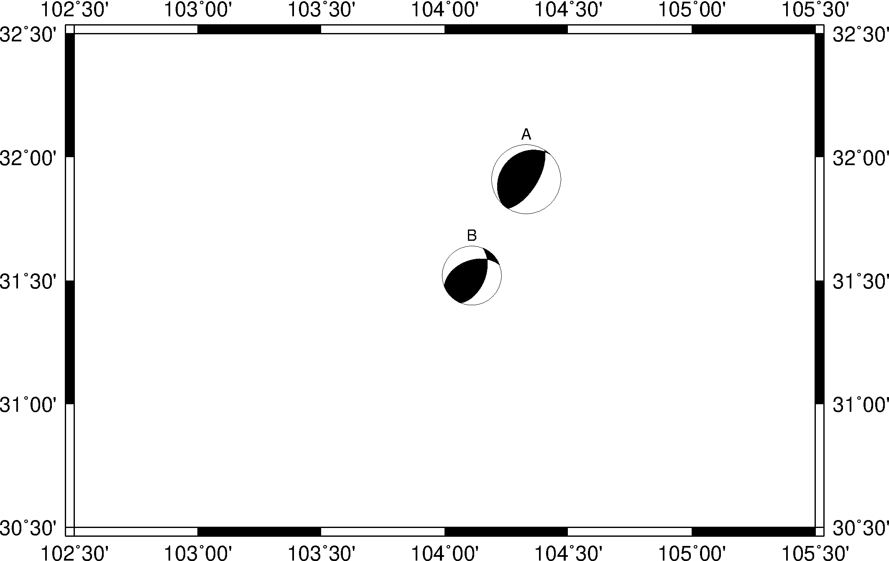
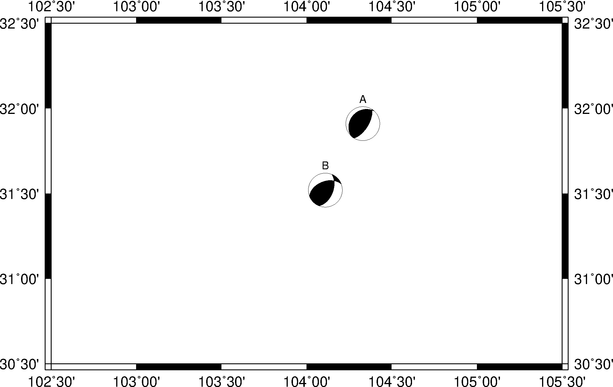
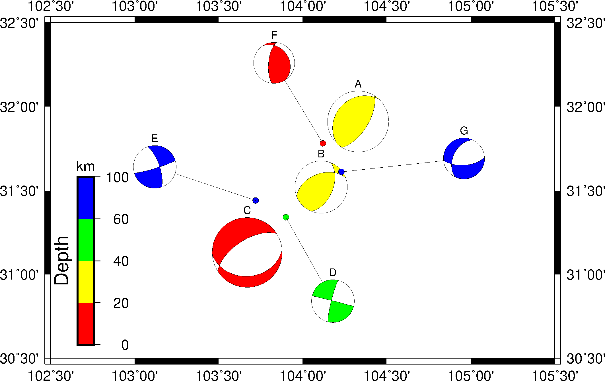

14.5 绘制震源球¶
psmeca 模块可以用于绘制震源球。
绘制震源球时需要向 GMT 提供震源的相关信息，包括：
- 震源位置及深度
- 震源机制解
- 震级
- 震源球在地图上的位置
其中，震源机制解可以用多种不同的方式描述。
psmeca 模块用 -S 选项用于指定震源机制解的描述方式。支持的描述方式有五种：
-SaAki-Richards描述-ScHarvard CMT-Sm|d|zGCMT 零迹矩张量-Sp两个断层平面的部分参数-Sx|y|tT、N、P轴
具体的格式见 psmeca 的说明文档。
14.5.1 震源球大小随震级变化¶
#!/bin/bash
gmt psmeca -JQ104/15c -R102.5/105.5/30.5/32.5 -Ba -Sa1c > beachball_1.ps << EOF
# 经度 纬度 深度(km) strike dip rake 震级 newX newY ID
104.33 31.91 39.8 32 64 85 7 0 0 A
104.11 31.52 27.1 22 53 57 6 0 0 B
EOF
rm gmt.*

本示例在震源位置处绘制了两个震源球。震源球的大小随震级变化。
-Sa1c 的 1c 指定了 5 级地震的震源球大小为 1厘米。其它地震震源球的大小根据震级按照如下公式进行缩放:
size = M / 5 * <scale>
例如，本例中7级地震的大小为 1.4 厘米。
14.5.2 固定大小的震源球¶
使用选项 -M 使所有震源球的大小均为定值，不随震级变化。
#!/bin/bash
gmt psmeca -JQ104/15c -R102.5/105.5/30.5/32.5 -Ba -Sa1c -M > beachball_2.ps << EOF
# 经度 纬度 深度(km) strike dip rake 震级 newX newY ID
104.33 31.91 39.8 32 64 85 7 0 0 A
104.11 31.52 27.1 22 53 57 6 0 0 B
EOF
rm gmt.*

14.5.3 震源球大小随震级变化，颜色随深度变化¶
使用 -G 和 -E 选项可以分别为震源球的压缩象限和拉伸象限指定不同的颜色。使用 -Z 选项则可以更进一步，根据某个具体的值动态指定压缩象限的颜色。
本例中展示如何用压缩象限的颜色表示震源的深度。需要先生成一个CPT文件，为每个深度段设置不同的颜色。然后，使用 psmeca 模块的 -Z 选项即可。
#!/bin/bash
PS=beachball_3.ps
CPT=meca.cpt
# 生成CPT文件，为每个深度段设置不同的颜色
cat << EOF > $CPT
0 0-1-1 20 0-1-1
20 60-1-1 40 60-1-1
40 120-1-1 60 120-1-1
60 240-1-1 100 240-1-1
EOF
gmt psbasemap -JQ104/15c -R102.5/105.5/30.5/32.5 -Ba -BWSEN -P -K > $PS
gmt psmeca -J -R -CP5p -Sa1.3c -Z$CPT -K -O >> $PS << EOF
# 经度 纬度 深度(km) strike dip rake 震级 newX newY ID
104.33 31.91 39.8 32 64 85 7.0 0 0 A
104.11 31.52 27.1 22 53 57 6.0 0 0 B
103.67 31.13 6.4 86 32 -65 8.0 0 0 C
103.90 31.34 43.6 194 84 179 4.9 104.18 30.84 D
103.72 31.44 67.3 73 84 -162 4.9 103.12 31.64 E
104.12 31.78 12.7 186 68 107 4.7 103.83 32.26 F
104.23 31.61 62.0 86 63 -51 4.7 104.96 31.69 G
EOF
gmt psscale -J -R -C$CPT -DjBL+w5c/0.5c+ml+o0.8c/0.4c -Bx+lDepth -By+lkm -L -S -O >> $PS
